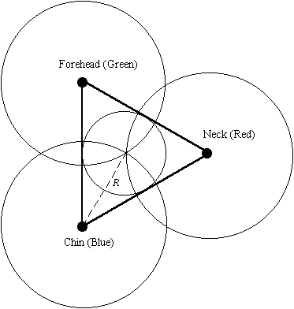
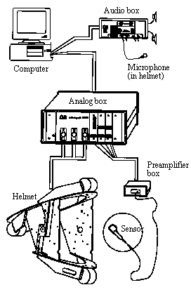

UCLA Phonetics Lab
Version 1.2 (October 1997)
by Jie Zhang summer 1996
with modifications by
Ian
Maddieson fall 1997, Taehong Cho winter 1999, Marco Baroni
summer 1999
II.
Preparing an Investigation with the Articulograph AG100
1. Powering Up and Starting
ART
2. Preparing and attaching
the sensors
3. Calibrating the System
4. Preparing the Computer Storage
5. Adjustments in
the System Set-Up Menu
6. Adjusting Values
of the System Parameters
7. Specifying the Protocol
Data
8. Positioning the Measurement Apparatus
IV. Analysis of the Measurement Data
1. Files Generated by the Articulograph AG100
2. The EMALYSE Program for Data Analysis and Evaluation
3. Using MultiCV to Export Data in ASCII FormatV. Function Keys in the ART Program
Go Back to UCLA Phonetics Lab: EMA
1. In the Set-Up Menu
2. In the Measurement MenuI. Things to know about the Articulograph AG100
1. The Principle of Operation of the Articulograph AG100
The Articulograph AG100 is a device utilizing alternating electromagnetic fields to track articulator movements over time during speech production. A high quality microphone is used to record the acoustic signal simultaneously with the articulatory data.
The system transduces movements of the articulators using an inductive measurement principle based on the physical law that the electromagnetic field strength in a receiver is inversely proportional to the cube of its distance from a transmitter. The system employs three transmitter coils placed equidistant from one another so that they generate a radially symmetric alternating electromagnetic field at different frequencies. A number of receiver coils (sensors) are placed on the subject's articulators (tongue, jaw, lips and teeth) along the midsagittal plane. The induced voltages on these receiver coils are sampled at a relatively high frequency. These voltages provide a measure of each receiver's distance from each transmitter as well as their tilt relative to the transmitter axes. The Cartesian coordinates of each receiver can be calculated as the point where the radii of three circles from the three transmitters intersect.
An accurate measurement of the distances of the sensors from the transmitters can only be achieved when the sensors are located in the midsagittal plane and their axes are aligned with the axes of the transmitter coils. If a sensor is rotated away from a parallel orientation, then the induced voltage declines proportional to the cosine of the angle of rotation (the "tilt angle") resulting in over-estimation of the distances. This measurement error can be estimated in the Articulograph AG100 system because of the arrangement of the three transmitter coils in an equilateral triangle: the distances to all three transmitter coils are expected to be distorted by the same factor. Its magnitude can thus be estimated by iteratively adjusting the radii in step until they intersect at a point.
If the sensor is in proper parallel alignment but outside the midsagittal plane, then the distance will also be distorted. This measurement error can only be completely corrected if the sensor is located at the dead center of the measurement area. If the sensor is neither in parallel alignment nor in the midsagittal plane, then the position cannot be determined precisely.2. The Helmet and Measurement Area in the Coordinate System
The three transmitter coils are mounted equidistant from one another on a rigid helmet. They are labeled and color-coded as follows: chin = K (German Kinn), blue; forehead = S (German Stern), green; neck = N (German Nacke), red. Their arrangement is shown schematically in Figure 1. The distance between any pair of transmitters is 320.9 mm. The chin coil is taken as the origin of the coordinate system, and the line from the Chin to the Forehead coil is the Y axis. In an ideal positioning of the helmet, the Forehead coil will be positioned directly above the Chin coil.
The measurement area is shown by the circle drawn inside the triangle in the figure. The center of the measurement area is the point equidistant from each of the three transmitters. This point lies at the intersection of the three circles with radius R centered on the three transmitters, as shown in Figure 1. Since R is a known distance, the response of a sensor placed in the center of the measurement area can be calibrated against this known distance. (Note the Neck transmitter is at 277.9 mm on the X axis from the origin and 160.45 mm on the Y axis; R is 185.27 mm.)

Figure 1. The basic idea.
3. Hardware and Software Components the Articulograph AG100
(1) Hardware
The principal hardware components of the Articulograph are (usually) kept out in public in Campbell 2101E. These consist of:• The helmet and calibration stand
• The helmet suspension unit
• The analog unit which controls the transmitter coils and converts the receiver signals into computer input. Our unit functions with up to ten receiver signals
• The audio box that records the acoustic signals and its two small speakers
• The two small white preamplifier boxes to which the sensors will be connected. Signals pass from the preamplifier boxes into the analog unit
• The computer Igor, in which two special-function cards are installed, an IEEE-488-Bus Interface Board for the Articulograph signals, and the Artus 962-2 Channel Acoustic Board that is responsible for the acoustic signal processing.The hardware components are shown schematically in Figure 2.

Figure 2. Principal hardware components of the Articulograph.
Items that are kept locked away in the "fieldwork" cupboard outside Campbell 2101E near the "Postdoc Office" include:
• The sensors
• The lead to connect the built-in microphone in the helmet to the audio box
• The optional stereo microphone
• Rubber moulding material for insulating the sensors and leads
• Glue for attaching the sensors
• Surgical gloves and sterilizing wipes
• Instruction manuals and other literature from the manufacturers, including printouts of tips from their website http://www.articulograph.de(Please go to our EMA page for updated information on the tools to be used when collecting EMA data)
(2) Software
On Igor there is a subdirectory called "AG100" on the C: drive and all the Articulograph-related software on this machine is installed in this directory. The programs you will be using for your investigation are most likely the following two:•The ART program — a DOS program for calibrating the Articulograph, and carrying out the recording of articulator movement and acoustic signals. The execution program is under the directory c:\AG100\art730, but you can start the program from any directory by typing "art" (a more recent version of the program can be started by typing art8 from the directory c\AG100\art98). The Articulograph manufacturers recommend quitting Windows before running ART.
•The EMALYSE program — a Windows program analyzes and evaluates the movement and acoustic data you acquired in the investigation. EMALYSE runs under Windows. In order to run this program, you need to open Windows and double click on the "emalyse" icon under "Microsoft Tools".
Other software programs that come with the machine include:
• The A2P program that enables the recording, reproduction and revision of acoustic data. This is an MS-DOS program. The execution program is under the directory c:\articulo\a2p\eng. You can start the program from any directory by typing "a2p".
• The MULTICV program that allows you to create a copy of the Articulograph AG100 data in different formats or to rotate the movement curves. The execution program is under the directory c:\articulo\multicv. But you can start the program from any directory by typing "multicv". MULTICV is useful if you do not plan to use EMALYSE to analyze your data, and you want to export them in ASCII format..
• The POINTS program for measuring the accuracy of the Articulograph AG100. The execution program is under the directory c:\articulo\points. But you can start the program from any directory by typing "points".There are manuals for all these programs. If you cannot find answers to your questions about these programs in this homemade manual, you are referred to those manuals. They are also in the cupboard outside the "Postdoc Office". A further program for analysis of Articulograph data is TAILOR. This is a Windows-95.
II. Preparing an Investigation with the Articulograph AG100
1. Powering up and Starting ART
Normally the helmet coils will be connected to the Analog unit; check that this is so. If not you will need to connect the helmet to the analog unit as shown in Fig. 2. Then turn on the analog unit using the switch at the back just above the power cord. In order for the equipment to reach the optimal operating temperature it is necessary to activate the system set-up menu in the program ART after turning on the analog unit. To activate the system set-up menu, run program ART by typing "art" under any directory and then select the first item in the main menu which says "Adj. of transmitter signal strength - signal voltages are shown". Hit return.The program call is necessary since the current system parameters are stored on the hard disk of the computer and after powering up the equipment they must be transferred from the computer to the analog unit. This data transfer takes place as soon as the system set-up menu in the program ART has been activated. To return to the main menu hit Esc. Move cursor down to last item, "End of program," and hit return to exit.
The operating temperature, which is on the order of 50°C is reached within 2 hours. It is NOT necessary for the program ART to be running during this waiting period. The computer can be turned off or used for other purposes. The current parameters remain in force until the analog unit is turned off.
Reliable data can only be collected after the system reaches its stable temperature. If you are performing an experiment early in the morning, one possibility is to to leave the analog unit on overnight, so the system will be ready for operation immediately in the morning.
2. Preparing and attaching the sensors (Please go to EMA page for updated information).
The sensors are in the cupboard. Select five to use. It is very important to know which sensor corresponds to which preamplifier channel when you carry out calibration or an investigation. Carefully connect the five sensors to the sockets in the preamplifier box..Before carrying out a measurement, it is recommended that the sensors are dipped in rubber solution. This reduces wear and tear on the sensors since the glue is not directly placed on them, and it also helps to keep the process hygienic. We have a supply of Plasty-late available (from hobby-time Bastel-System GmbH, D-88099 Neukirch/Bodensee, Germany). Allow a drying time of about 15 minutes. The solution is milky when wet but transparent when dry. After use, the fine rubber film (together with any remnants of the tissue adhesive used to attach the sensors to the subject) should be removed from the sensors before storing them.
It is essential to perform a calibration of the system before each experiment. With the helmet on the calibration stand, pull the calibration magazine forwards so that the slots in it can be seen. After connecting the sensors to the preamplifier, load them into the calibration magazine in order with #1 at the back, then #2 and so on. Pass the leads through the central hole and out the front. Ensure that the leads are not close to any of the transmitters.
Moving the calibration magazine forwards and backwards allows any given sensor to be positioned in the exact center of the measurement area. Each one must be moved in turn to this position, and a calibration performed. With the ART program running, select the first item in the main menu by hitting return. You will see 2 columns of values for each transmitter in five rows, one for each sensor. If any position is returning values of 0 across the row, its polarity is reversed. Take it out and turn the plug the other way up.
Position sensor #1 in the center of the measurement area, then hit F1. The computer will then estimate the correct constant required to correlate the signal strength with the known distance R. Hit any key to resume. Then position sensor #2 in the center and hit F2, etc. with the remaining sensors. After this procedure is completed all sensors should be returning values about in the range 200-600. If a sensor returns very low values (close to 0), it could be the case that the sensor was attached to the preamplifier with reversed polarity. Reattach the sensor to the preamplifier turning its plug upside-down and try recalibrating the sensor.
After you are done calibrating the first five sensors (1-5), hit Tab and repeat the procedure for the second set of five sensors (6-10) (place sensor 6 in the magazine as if it were sensor 1, sensor 7 as if it were sensor 2, etc.)
His Esc to go to the next step. A warning to recalculate the radius table will appear. In the main menu, go down to "Adjustment of geometric and parameters" and hit return. Move the cursor down to "Recalulate radius table". Hit return.
In this menu you can also adjust the sample rate. Most other items here you will never need to adjust. Hit Esc to return to main menu.
4. Preparing the Computer Storage
Make sure there is enough free storage space on the hard disk. The storage requirements depend not only on the recording time but also on the chosen measurement frequency. Additional storage capacity is also required for acoustic data. By way of example, an investigation consisting of 10 sweeps, each of 10 second, and also including acoustic data requires approximately 950Kbytes and without acoustic data 230 Kbytes of storage space, assuming a measurement frequency of 100Hz. For a measurement frequency of 500Hz the same investigation requires 1900 Kbytes with and 1200Kbytes without acoustic data.
5. Adjustments in the System Set-up Menu
The system set-up menu is the menu that says "_Adj. of transmitter signal strength - signal voltages are shown_". Activate this menu and check that all channels are showing plausible values. Be careful at this stage NOT TO ALTER THE TRANSMITTER POWER. If you do alter a value by mistake then type the "home" key to restore the old values. This menu allows you in particular to specify the measurement frequency and the filter.
(1) Specifying the Measurement Frequency: F10
You will be able to change the measurement frequency by pressing F10. This specification should be a number between 8 and 250. This number determines the time between 2 consecutive position measurements in units of 0.1ms. Accordingly, 250 means that a position measurement is carried out every 25ms. This corresponds to a measurement frequency of 40Hz. Higher measurement frequencies reproduce fast movements more faithfully but require correspondingly more storage space. Even if ART allows you to set higher frequencies, the highest frequency that will actually be implemented by the system is 500Hz.
(2) Setting the Filter: F
For technical reasons the displayed digital values fluctuate slightly. In order to obtain a more stable display a filter function with steps of 2, 3 and 4 can be turned on. When the step is equal to 1 the filter is turned off. The current filter step is shown in the bottom line of the window. Every time the "F" key is pressed the filter step is changed (1, 2, 3, 4, 1, 2...). The filter is only useful during the set-up procedure since the displayed values will fluctuate less. But during actual data recording, the filter should always be set to 1.
6. Adjusting Values of the System Parameters
Very important. Please read.
By choosing the menu option "Show presently used parameters" you can examine the current settings. Should you wish to make changes, use the menu option "Adjustment of geometric and parameters". The "Adjustment of geometric and parameters" window includes the following choices:
Sampling rate
Number of channels
Recalculate radius table
Alternate language for screen menus
Type in the offset values
Type in the R-min values
Maximum transmitter-receiver distance
Helmet size
Save acoustic data
Power of the radius function
End of submenu
There are two kinds of parameters involved in this menu: parameters related to position calculations and program parameters. YOU SHOULD NOT CHANGE ANY PARAMETERS RELATED TO POSITION CALCULATIONS. If you do so, then you have to recalculate the radius table (the program will prompt you to do so when you exit this menu) and recalibrate the system, or you can change the parameters back to their original values.
(1) Parameters for Position Calculation
(a) Type in the Offset Values
An offset is an undesired signal present at the output of the amplifier when no signal is present at the input. These offset values were measured in the calibration process and can automatically be subtracted from the measured signals. Hence you should not use this function in normal operation.(b) Type in the R-min Values
The R-min table shows the values determined during calibration of the sensors. These values correspond in the formulaU=U0* 1/R3 to the distance R at which U equals to the maximum signal voltage. The R-min values accordingly show the smallest possible distance between a sensor and a transmitter coil that can be used for position calculation. Since these values are acquired during calibration, they should not be changed in normal operation.
(c) Maximum Transmitter-Receiver Distance
The calculation of the sensor position involves estimating the distance between sensor and transmitter on the basis of the signal induced in the sensor. However, as the measured signal approaches 0 the estimated distance approaches infinity. In order to avoid calculations with excessively large numbers all calculated distances that are larger than the parameter value for maximum transmitter-receiver distance are truncated to this value. The value is displayed in units of 0.01m and is set to 32,090.00. It should not be changed in your investigation.
(d) Helmet Size
The helmet that we have is the small-size one. You should not change the helmet size to anything else.
(e) Power of the Radius Function
Calculation of the sensor positions is performed on the basis that the measured signal is inversely proportional to the cube of the distance. So the default value of the exponent in the radius function is set to 3. It should not be changed unnecessarily.
(2) Program Parameters
These parameters can be changed in normal operation without having to recalculate the radius table and recalibrate the system.
(a) Sampling Rate
Yes, you can also change the measurement frequency in this menu.
(b) Number of channels
You can specify a number between 1 and 10. This value determines the number of channels that are recorded and displayed during measurement. A value of 10 means that all 10 channels are turned on. A value of 3 activates channels 1, 2 and 3.
(c) Alternate language for screen menus
This function switches the language for screen menus between English and German.
(d) Save Acoustic Data
When you choose this function the text in the menu line changes and indicates to you whether the storage function for acoustic data is active.
7. Specifying the Protocol Data
You should set up a directory under your user's directory for the storage of measurement values of each investigation. You do so by selecting the "Data record and commentary" item in the ART main menu and following the prompts. You are STRONGLY recommended to transfer your data files onto floppy disks or zip disks and delete them from the hard disk after you are done with the measurements.
8. Positioning the Measurement Apparatus
Some precautions should be taken in positioning the measurement apparatus: in order to minimize electromagnetic disturbances, the leads to the preamplifiers should not run parallel to the leads to the transmitter coils on the helmet and should be positioned as far away as possible from the transmitter coils and from the transmitter leads; the leads to the transmitter coils should be laid out on the subject's left; make sure there is no chance of tripping over any of the leads.
III. Performing the Investigation
(Please go to EMA page for updated information).
It is a requirement of the measurement principle that the sensors should be positioned precisely in the midsagittal plane and the main axis of the transmitter coil should be as nearly as possible parallel to the axes of the transmitter coils.
(1) Gluing a Sensor to the Oral Mucosa
Thoroughly dry the area on the mucosa to which the sensor is to be attached. Apply tissue adhesive to the mucosa and the sensor. Then fix the sensor in place using a pair of tweezers.
(2) Gluing a Sensor to a Tooth
Caution! The tissue adhesive damages plastic fillings.
(3) Gluing a Sensor to the Skin
A sensor can be simply fastened with a strip of adhesive tape on normal skin.
(4) Arranging the Lead Wires
The lead wires to the sensors must be sufficiently long so that they won't come down under tension during the articulator movements. The wires should be led out via the corner of the mouth and across the right cheek. Here the wires can be easily stabilized with a strip of adhesive tape. From the cheek the wires should be led to the right shoulder. Electromagnetic disturbances to the measurement signals can be best suppressed if the sensor lead wires are positioned as far as possible away from the chin and the neck transmitter coils .
(5) Allowing the Subject Time to Get Used to the Sensors
Allow the subject to speak before placing the helmet on the subject's head. This allows the subject to get used to the sensors and you can determine if all the sensors are properly fixed in place.
(1) Affixing the Headband
This plastic band is worn by the subject like a headband and it is fastened at the back of the head. It must be so positioned that the helmet's fastening screws rest on the headband.
(2) Positioning the Helmet
Fig. 3 (to be provided soon)
Before putting on the helmet make sure the fastening screws are fully retracted. The investigator should then take up a position behind the subject's head and position the helmet on the subject's head as shown in Fig. 4. The helmet should be held in such a way that the red neck transmitter coil is at the bottom and the blue chin coil is at the top. Hold the helmet in this position and bring it up to the head of the subject until the red coil is close to the nape of the neck. the helmet must then be rotated about the red coil so that the blue coil moves in a circular path in front of the face. Pay attention to the position of the lead wires to the helmet and the lead wires from the sensors to the input amplifiers.
The fastening screws are then screwed into the helmet until the helmet is fixed to the head and the measurement area is optimally positioned.
The screen display can be used to monitor how well the sensors are located in the center of the measurement area. Since it is the helmet that defines the coordinate system for the measurements, you can adjust the position of the sensors in the coordinate system by repositioning the helmet.
(3) Checking the Alignment
Hook the alignment device onto the forehead and chin coils and view the sensors with one eye by sighting along the edge of the Plexiglas. This edge defines the midsagittal plane. The sensors must be located on this plane. With the subject's mouth open, the alignment of the sensors inside the mouth can be checked. If necessary shift or rotate the helmet until all the sensors are in line with the Plexiglas edge.
(4) Checking the Tilt Factor
Examine the size of the crosses with which the sensor positions are displayed on the screen. Small crosses indicate that the sensors are well positioned. If the screen shows very large crosses in the center then the polarity of the corresponding sensors is reversed. Check with the set-up menu (the menu that says "_Adj. of transmitter signal strength - signal voltages are shown_") whether these channels all show values of zero. If this is the case, unplug the sensors and plug them back in again after rotating the plug by 180?. Usually you don't have to worry about this because the polarity of the sensors is marked by tapes on their plugs.
If the position of the helmet appears acceptable and an individual sensor nonetheless shows a large cross, then this sensor should be removed and glued back on again.
3. Performing an Actual Measurement Sweep
If you are making acoustic recording as well, don't forget to turn on the audio box and plug the microphone into the LEFT input port on the audio box. Also make sure the "Save acoustic data" item in the main menu is turned on. Now you are all in business to do the actual data recording. Here we go:
(1) Selecting "Measurement, Display and Storage of Positions" in the Main Menu
This is the window in which you carry out the recording. The sensors are shown as colored small crosses, and a portion of an equilateral triangle whose corners correspond to the centers of the transmitter coils are shown on the screen too.
The portion of the measurement area displayed on the screen can be magnified in steps of 2, 3 and 4. You can use the "Z" key to magnify the display. The magnification factor is displayed in the status line (top line of the screen).
The coordinates of the position of the left corner of the screen display are indicated by the "offset" values in the status line. You can modify the coordinates of the left corner position of the screen by pressing the "B" key. Instructions then appear telling you how to use the cursor keys to move the display to the right, left, up or down.
(2) Turning on the Memory Function
Use the right-arrow cursor key or the "M" key to turn on the memory function. The word "memory" then appears in the status line. From now on the measurement data can be stored.
If a beep is heard and the message "no data files are open" shows on the screen, you must select the "Data record and commentary" in the main menu to specify the protocol data of the investigation.
(3) "Pen Down" Records the Data
When the program function "measurement..." is running, the current sensor positions are continuously displayed on the screen as crosses but are not yet stored (even after the memory function is turned on). This is referred to as the "pen up" state. As with a plotter, no line is drawn as the pen is moved. The word "up" is to be seen in the status line at the top of the screen.
By pressing the down-arrow cursor you turn on the "pen down" function. Again as a plotter, when the pen is down in touch with the paper, the movement trajectory is recorded, after the "pen down" function is activated, the movement trajectories of the sensors will be drawn on the screen and recorded to the main memory (not hard disk) of the computer. The acoustic data will also be recorded if you choose to do so.
(4) "Pen Up" Turns the Recording off
By pressing the up-arrow cursor you terminate the recording. The sensors positions are again displayed as crosses on the screen, but the recorded movement trajectories remain visible on the screen. At the same time the recorded acoustic data will be replayed and crosses indicating the magnitude of the tilt factor will be overlaid on the movement traces. By means of the acoustic recorded and the graphic display you can decide whether the sweep you just recorded contains the desired data.
(5) Using the "W" Key to Store the Desired Data on the Hard Disk
If the recorded sweep contains the desired results, press the "W" key to store the data on the hard disk. This is very important. You will lose the desired data when the next sweep is recorded if this step is not carried out, although you think the data are "recorded"--they are only "recorded" to the main memory, not your data files on the hard disk.
During the storage procedure the acoustic data are once again replayed. Please wait until a beep is heard, indicating the data have been successfully stored on the hard disk. The following prompt is then displayed:
-Commentary <Return>
and you can enter one line of commentary for this sweep (This prompt is only displayed if you chose the "add comments to the data" option in the Data Record and Commentary menu -- we typically do not select this option, in order to save time).
(6) Using the "C" Key to Discard the Undesired Data
If the recorded sweep does not contain the desired results, press the "C" key to discard the recorded data and delete the movement traces on the screen. You can repeat the recording by means of a further "pen down"--"pen up" sequence.
4. Using the "G" Key to Determine a Reference Contour
It is possible to use the movement data from one of the sensors from the last sweep as a reference contour. By pressing the "G" key three options will appear on the screen: Record, Delete and Escape. Press "A" to record, "L" to delete a contour and Esc to terminate this menu. After typing the "A" key, you must specify the channel number whose trajectory is to be used as the reference contour. This contour remains on the screen as a yellow trace until a new reference contour is chosen or the measurement procedure is terminated.
Tip: Probably the most useful reference contour is either the profile of the hard palate or of the upper incisors.
Follow the instructions under (5) to record and store further sweeps for the investigation. You might want to make sure that the helmet position has not changed between sweeps. You can do so by asking the subject to press the tongue against the hard palate and check the displayed position of the sensors with respect to the contour of the hard palate (if you recorded this contour as your reference contour). If these two contours match quite well, that indicates the helmet is still correctly positioned.
6. Turning off the Memory Function
When you have completed your measurements, use the left-arrow cursor key or the "K" key to turn off the memory function. Storage of the data is then properly terminated.
7. Taking off the Helmet and Removing the Sensors
Loosen the helmet's fastening screws and take the helmet off by reversing the procedure for putting it on. Refer again to Fig. 3. The neck coil should remain in position and the chin coil should move through a semi-circle in front of the subject's face. Carefully remove the sensors from the subject's articulators with a pair of tweezers.
IV. Analysis of the Measurement Data
1. Files Generated by the Articulograph AG100
(1) Information Files
Three information files are generated for each investigation carried out using the Articulograph AG100. If your investigation specifies the name "Test", the three files will be: TEST.PRT, TEST.CFG and TEST.TIM.
TEST.PRT contains the protocol of the investigation "Test" and an be either printed out without further revision or can be edited using word processing software. The protocol file is the only information file that consists of normal text.
TEST.CFG encodes the Articulograph AG100 operation parameters as well as the calibration data in force at the time of the investigation.
TEST.TIM stores the starting time of each sweep of the investigation in binary form.
(2) Data Files
For each investigation, 99 sets of movement data (sweeps) can be stored in data files with the same name. The running number of the sweep is encoded in the suffix of the file name. Three data files are produced for each sweep. Take "Test" as the specified name of the investigation, these files will be: TEST.001...TEST.099, TEST.T01...TEST.T99, TEST.A01...TEST.A99.TEST.001...TEST.099 contain the movement data from the 1st to the 99th sweep. They contain all X and Y coordinates in the order in which they were recorded.
TEST.T01...TEST.T99 contain a tilt factor for every coordinate pair that is saved in the corresponding files TEST.001...TEST.099.
TEST.A01...TEST.A99 contain the digital speech signal for each sweep.
2. The EMALYSE Program for Data Analysis and Evaluation
You will use the EMALYSE program to analyze and evaluate the movement and acoustic data you acquired in the investigation. EMALYSE is a Windows program. In order to run this program, you need to open Windows and double click on the "emalyse" icon under "Microsoft Tools" (temporarily). The manual for the program is in the cupboard outside the "Postdoc Office". The manual itself is marginally comprehensible and you can probably walk your way through it. From my experience, there maybe some small bugs in the program, but they won't seriously affect your analysis. Here are some tips that might be helpful. This is NOT intended as a substitute to the manual, so you should go read the manual first. If you have questions to which the manual doesn't have the answers, you might find the answers here.
• When you use the "open data file" command in the "File" menu, a dialog box appears and it prompts you to open a *.TIM file. When you load the *.TIM file, the program will automatically load all other necessary files according to the selected investigation. Then you should use the <<, -sweep- and >> buttons in the menu bar to open the desired sweep in your investigation.
• The program can display various windows at the same time:
X/Y display of the sensors;
Protocol window in which you can "note down" the numerical values of different parameters around the current cursor position and type in comments;
- Acoustic signal window;
- Magnified acoustic window that shows the detailed sound signal around the current cursor position;
- DataView window that shows the numerical values of different parameters of the current cursor position;
You should arrange the windows in a way that best serves your purposes.
- X position over time;
- Y position over time;
- X velocity over time;
- Y velocity over time;
- Tilt factor over time.
• Your window's set-up can be saved as a *.dsk file in your own directory by using the "save set-up" function under the "File" menu. You can use the function "load set-up" under the "File" menu next time you open EMALYSE. You can also turn on the "save options on end" under the "Option" menu. Thus the path to the latest set-up will be written into the emalyse.ini file so that the latest set-up will be installed when you re-open the EMALYSE program.
• When the main cursor is moved, it affects all windows synchronously. The most efficient way of moving the cursor is to move it in the acoustic window. To move the cursor, hold down the left button of the mouse and the cursor will move with the mouse until the mouse button is released.
• You can use the "Note down" menu to record the numeric information of the data at the cursor time point to the "Protocol" window. You can use the "note down format" item under the "Options" menu to choose to write 1, 3, or 5 lines to the protocol window. Each line consists of the x-position, the y-position and the tilt factor of 5 consecutive data samples and the first number of each line is the sample No. of the first of the five samples. If "1" is selected in the "note down format" of the "Option" menu, the "Note down" function takes down the sample data for the cursor position and also the data for the next four samples. If "3" is selected, the preceding five and the following five samples to these five samples will also be taken down in the protocol file. If "5" is selected, the preceding ten and the following ten samples to these five samples will also be taken down in the protocol file.
• When you try to use the "Marker" menu to set markers or define segments, you might find the manual highly confusing. So here's the way to do these things:
If you want to set a marker:
(a) Click on "Marker" in the menu bar.If you want to define a segment:
(b) Click on the "new" button under "Marker".
(c) Type in a name for the marker under "Name".
(d) (Optional) Type in notes for the marker.
(e) Set the marker position using "set marker" or "...to cursor" under "Position".
(f) Click on the "OK" button.(a) Click on "Marker" on the menu bar.• You will probably find the following problem with regard to segments: when you choose "run current segment" under "Play mode" and click on "Play" in the menu bar, while the current segment IS being played, sometimes the cursor in the acoustic signal window does not move within the current segment. Try not to let it bother you. This might be a bug in the EMALYSE program.
(b) Click on the "new" button under "Marker".
(c) Type in a name for the segment under "Name".
(d) (Optional) Type in notes for the segment.
(e) Click on "create" under "Segment".
(f) Click on "begin" under "Segment".
(g) Set the 1st marker position using "set marker" or "...to cursor" under "Position".
(h) Click on "end" under "Segment".
(i) Set the 2nd marker position using "set marker" or "...to cursor" under "Position".
(j) Click on the "OK" button.• When you fiddle with the "X/Y-cursor" or "add reference contour" dialog box under the "Display" menu, the changes will only take effect AFTER you load another sweep of data.
• Again, this section is NOT intended as a substitute for the manual of the EMALYSE program. You should go to the manual for detailed instructions of the program.
3. Using MultiCV to Export Data in ASCII Format
• If you plan to analyze EMA data with a program other than EMALYSE, you will need to save your data in ASCII format using MultiCV.
• To start MultiCV, double click on the MultiCV.exe icon on Igor's desktop.
• Click on the "open file" icon in the top left corner and select the file corresponding to the dataset that you want to export (the file you select must have the .cfg extension).
• Check the trajectory-ASCII option under convert movement data and click on the "tools" button to its right. Click on point under decimal separator.
• If you want to convert all the sweeps in the dataset, click on the take all button in the lower right section of the window. Otherwise, click on the sweeps you want to convert (one at a time) and then on the >> button.
• Click on the exec. conversion button. The conversion process takes some time.
• The converted sweeps are automatically stored in the directory of the original data, in a folder named Convert (in principle, it is possible to direct the converted data to other locations, but whenever we tried, MultiCV failed to work properly). Each converted sweep is saved as a text file named namenumber.txt, where name is the name of the dataset and number is the sweep number.
• Each line of a converted file (except the header line) corresponds to a sampling point, and it contains the following tab-delimited data fields: time, x dimension of channel 1, y dimension of channel 1, tilt factor of channel 1, x dimension of channel 2, y dimension of channel 2, tilt factor of channel 2... x dimension of channel 10, y dimension of channel 10, tilt factor of channel 10.
• Acoustic data can also be converted into ASCII files, but trajectory and acoustic data cannot be converted at the same time.
• To convert acoustic data, check the sound-ASCII option under convert acoustic data and proceed in the same way as with trajectory data.
• The converted acoustic data are automatically stored in a Convert folder in the same directory as the original data. The data from a sweep are saved in a text file named namenumber.txt, where name is the name of the dataset and number is the sweep number.
• Important: The converted acoustic files, like the converted articulatory files, are automatically saved in a Convert folder in the same directory as the original data. This means that, if you do not move or rename the Convert folder containing the articulatory data before converting the acoustic data, the Convert folder containing the acoustic data will replace the one containing the articulatory data, and the latter will be lost.
• Each line of a text file containing acoustic data corresponds to a sampling point, with two tab-delimited fields: time and sample.
• ASCII files containing EMA data can easily be converted into ESPS fea_sd files, which can be analyzed using XWAVES. To convert a file containing a single, header-less column of ASCII data corresponding to one channel into a fea_sd file, type the following command (of course, on a computer with the ESPS software installed): testsd -r samplefq -a filename filename.sd (where samplefq is the sampling frequency used to collect EMA data, filename is the name of the ASCII file and filename.sd is the name of the fea_sd file to be generated).
V. Function Keys in the ART Program
"down-arrow" Decrease transmitter power (You don't need to use this)2. In the Measurement Menu
"up-arrow" Increase Transmitter power (You don't need to use this)
"right-arrow" Choice of column (transmitter coil) (You don't need to use this)
"left-arrow" Choice of column (transmitter coil) (You don't need to use this)
"F1"..."F5" Calibration of the sensors in channel 1...5 (You don't need to use this)
"F9" Store the new transmitter power (You don't need to use this)
"Insert" Choose all columns (transmitter coils) (You don't need to use this)
"Home" Cancel the transmitter power changes (You don't need to use this)
"End" Set transmitter power to maximum (You don't need to use this)
"F" Filter adjustment choices
"O" Offset determination (You don't need to use this)
"Esc" Exit to the main menu"down-arrow" Pen down
"up-arrow" Pen up
"right-arrow" Memory function on
"left-arrow" Memory function off
"B" Modify display area
"C" Clear last record and screen
"F" Choice of filter adjustment
"G" Determine a reference contour
"K" Memory function off
"M" Memory function on
"W" Data storage (write)
"Z" Zoom in/out display
"Esc" Exit to the main menu